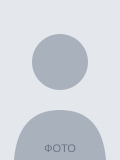

Изменяем кириллицу на латиницу по клику
Ниже — учебный макет разворота паспорта (страницы 2 и 3) с вымышленными данными. Кнопка «Заменить» переводит данные на латиницу по правилам транслитерации, которые используются в загранпаспортах, а повторное нажатие возвращает кириллицу. Изменённые поля выделяются жёлтым.
| Страница 2 | Страница 3 |
|---|---|
|
Кем выдан УЧЕБНЫЙ ОТДЕЛ № 1 ГОРОДА ОБРАЗЦОВО Дата выдачи 01.01.2014 Код подразделения 000-000 Подпись владельца: ____________ |
 Фамилия ИВАНОВ Имя ИВАН Отчество ИВАНОВИЧ Пол МУЖ. Дата рождения 01.01.2000 Место рождения ГОР. ОБРАЗЦОВО |